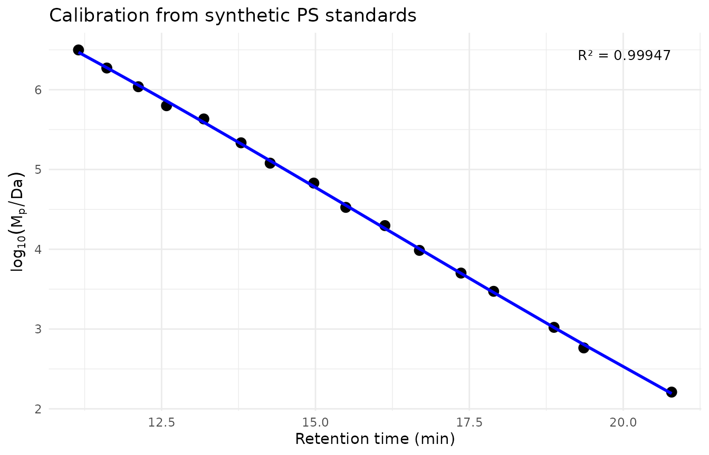
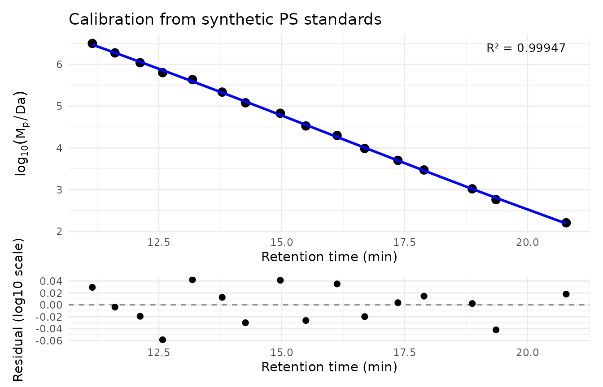

Overview
This guide shows how to save a fitted calibration, load it into another recipe, and inspect the supplied standards and fit residuals. The examples use synthetic package data.
Setup
library(measure)
#> Loading required package: recipes
#> Loading required package: dplyr
#>
#> Attaching package: 'dplyr'
#> The following objects are masked from 'package:stats':
#>
#> filter, lag
#> The following objects are masked from 'package:base':
#>
#> intersect, setdiff, setequal, union
#>
#> Attaching package: 'recipes'
#> The following object is masked from 'package:stats':
#>
#> step
library(measure.sec)
library(recipes)
library(dplyr)
library(ggplot2)Create and save a calibration
Fit a calibration
sec_ps_standards contains synthetic standard values,
with retention time in minutes and retention volume in millilitres. The
recipe uses a synthetic PS-50K trace from sec_triple_detect
so the calibration can be prepared and saved through the recipe API.
# Load polystyrene standards
data(sec_ps_standards)
# View the standards
sec_ps_standards |>
select(standard_name, mp, log_mp, retention_time) |>
head(8)
#> # A tibble: 8 × 4
#> standard_name mp log_mp retention_time
#> <chr> <dbl> <dbl> <dbl>
#> 1 PS-3150000 3150000 6.50 11.2
#> 2 PS-1870000 1870000 6.27 11.6
#> 3 PS-1090000 1090000 6.04 12.1
#> 4 PS-630000 630000 5.80 12.6
#> 5 PS-430000 430000 5.63 13.2
#> 6 PS-216000 216000 5.33 13.8
#> 7 PS-120000 120000 5.08 14.3
#> 8 PS-67500 67500 4.83 15.0
# Prepare standards with required column names
# The step expects 'retention' and 'log_mw' columns
ps_cal_standards <- sec_ps_standards |>
select(retention = retention_time, log_mw = log_mp)
data(sec_triple_detect, package = "measure.sec")
sample_data <- sec_triple_detect |>
filter(sample_id == "PS-50K")
# Create a recipe with conventional calibration
rec <- recipe(ri_signal + elution_time ~ sample_id, data = sample_data) |>
update_role(sample_id, new_role = "id") |>
step_measure_input_long(
ri_signal,
location = vars(elution_time),
col_name = "ri"
) |>
step_sec_baseline(measures = "ri") |>
step_sec_conventional_cal(
measures = "ri",
standards = ps_cal_standards,
fit_type = "cubic",
extrapolation = "none"
)
# Prep the recipe (this fits the calibration)
prepped <- prep(rec)
#> Warning: Standard at 12.58 has 14.4% MW deviation.
#> ℹ Consider removing outlier standards or using a different fit type.Save the calibration
Use save_sec_calibration() to extract and save the
calibration for reuse:
# Create a temporary file for this example
cal_file <- tempfile(fileext = ".rds")
# Save with metadata for traceability
save_sec_calibration(
prepped,
cal_file,
metadata = list(
column = "<column-id>",
instrument = "<instrument-id>",
analyst = "<analyst-id>",
notes = "<method notes>"
)
)
#> ✔ Saved cubic calibration to /tmp/Rtmp5eEqRf/file276a769adaf5.rdsFile formats
Two formats are supported:
| Format | Extension | Best For |
|---|---|---|
| RDS | .rds |
Default. Preserves all R objects exactly |
| YAML | .yaml |
Human-readable, good for version control |
# Save as YAML for human readability
save_sec_calibration(prepped, "calibration.yaml")Load and reuse a calibration
Load a saved calibration
# Load the calibration
cal <- load_sec_calibration(cal_file)
#> ℹ Loaded cubic calibration (R\u00b2 = 0.9995)
# View calibration details
print(cal)
#>
#> ── SEC Calibration ─────────────────────────────────────────────────────────────
#> Fit type: cubic (degree 3)
#> Calibration range: 11.15 to 20.79
#> Standards: 16
#>
#> ── Fit Quality ──
#>
#> R\u00b2: 0.999466
#> RMSE (log MW): 0.0294
#> Max % deviation: 14.43%
#>
#> ── Settings ──
#>
#> Extrapolation: none
#> Output column: mw
#> Log output: TRUE
#>
#> ── Metadata ──
#>
#> Created: 2026-11-19 02:23:21
#> measure.sec version: 0.0.0.9000
#>
#> ── User Metadata
#> column: <column-id>
#> instrument: <instrument-id>
#> analyst: <analyst-id>
#> notes: <method notes>Use in a new recipe
Pass the loaded calibration to
step_sec_conventional_cal() to skip fitting:
# Use another synthetic PS trace from the packaged dataset.
# Its elution_time field is in minutes.
new_samples <- sec_triple_detect |>
filter(sample_id == "PS-100K")
# Create a recipe using the saved calibration
rec_new <- recipe(ri_signal + elution_time ~ sample_id, data = new_samples) |>
update_role(sample_id, new_role = "id") |>
step_measure_input_long(
ri_signal,
location = vars(elution_time),
col_name = "ri"
) |>
step_sec_baseline(measures = "ri") |>
step_sec_conventional_cal(calibration = cal, extrapolation = "none")
# Prep and bake
prepped_new <- prep(rec_new)
#> ℹ Using pre-loaded cubic calibration (R\u00b2 = 0.9995)
result <- bake(prepped_new, new_data = NULL)Inspect calibration quality
View fit diagnostics
# Summary shows per-standard results
summary(cal)
#>
#> ── SEC Calibration ─────────────────────────────────────────────────────────────
#> Fit type: cubic (degree 3)
#> Calibration range: 11.15 to 20.79
#> Standards: 16
#>
#> ── Fit Quality ──
#>
#> R\u00b2: 0.999466
#> RMSE (log MW): 0.0294
#> Max % deviation: 14.43%
#>
#> ── Settings ──
#>
#> Extrapolation: none
#> Output column: mw
#> Log output: TRUE
#>
#> ── Metadata ──
#>
#> Created: 2026-11-19 02:23:21
#> measure.sec version: 0.0.0.9000
#>
#> ── User Metadata
#> column: <column-id>
#> instrument: <instrument-id>
#> analyst: <analyst-id>
#> notes: <method notes>
#>
#> ── Per-Standard Results ──
#>
#> # A tibble: 16 × 10
#> location actual_log_mw predicted_log_mw residual_log_mw actual_mw
#> <dbl> <dbl> <dbl> <dbl> <dbl>
#> 1 11.2 6.50 6.47 0.0294 3150000.
#> 2 11.6 6.27 6.28 -0.00364 1870000.
#> 3 12.1 6.04 6.06 -0.0192 1090000
#> 4 12.6 5.80 5.86 -0.0585 630000.
#> 5 13.2 5.63 5.59 0.0421 430000.
#> 6 13.8 5.33 5.32 0.0126 216000
#> 7 14.3 5.08 5.11 -0.0300 120000.
#> 8 15.0 4.83 4.79 0.0413 67500.
#> 9 15.5 4.53 4.55 -0.0262 33500.
#> 10 16.1 4.30 4.26 0.0352 19800
#> 11 16.7 3.99 4.01 -0.0197 9680
#> 12 17.4 3.70 3.70 0.00359 5030
#> 13 17.9 3.47 3.46 0.0146 2970
#> 14 18.9 3.02 3.02 0.00222 1050
#> 15 19.4 2.76 2.81 -0.0419 580
#> 16 20.8 2.21 2.19 0.0181 162
#> # ℹ 5 more variables: predicted_mw <dbl>, pct_deviation <dbl>,
#> # prediction_se <dbl>, ci_lower_log_mw <dbl>, ci_upper_log_mw <dbl>Quality metrics
| Metric | Meaning |
|---|---|
| R² | Fraction of response variation described by the fit |
| RMSE (log MW) | Typical residual size on the log molecular-weight scale |
| Max % deviation | Largest percent difference from a supplied standard value |
There is no universal cutoff for these summaries. Set acceptance criteria for the method and its intended use.
View the calibration curve
plot_sec_calibration(sec_ps_standards) +
labs(
x = "Retention time (min)",
y = expression(log[10](M[p] / Da)),
title = "Calibration from synthetic PS standards"
) +
theme_minimal(base_size = 11)
The built-in cubic plot of the sixteen synthetic polystyrene standards. Its curve and R-squared annotation summarize this dataset; they do not define an acceptance limit.
calibration_plot <- plot_sec_calibration(
sec_ps_standards,
show_residuals = TRUE
)
calibration_plot[[1]] <- calibration_plot[[1]] +
labs(
x = "Retention time (min)",
y = expression(log[10](M[p] / Da)),
title = "Calibration from synthetic PS standards"
)
calibration_plot[[2]] <- calibration_plot[[2]] +
labs(
x = "Retention time (min)",
y = "Residual (log10 scale)"
)
calibration_plot <- calibration_plot & theme_minimal(base_size = 11)
calibration_plot
The calibration curve and residuals returned by
plot_sec_calibration() for the synthetic polystyrene
standards. Residuals are measured in log10 peak molecular weight; the
horizontal zero line marks exact fit at a standard.
Decide when to recalibrate
Record and manage calibrations
Naming conventions
Use descriptive, consistent file names:
# Good: includes key information
"ps_<column-id>_<date>.rds"
"pmma_<column-id>_<instrument-id>_<date>.yaml"
# Avoid: ambiguous names
"calibration.rds"
"cal_new.rds"Include metadata
Record enough method details to identify where the calibration applies:
save_sec_calibration(
prepped,
"ps_calibration.rds",
metadata = list(
column = "<column-id>",
instrument = "<instrument-id>",
analyst = "<analyst-id>",
date = Sys.Date(),
mobile_phase = "<mobile-phase>",
flow_rate = "<flow-rate>",
temperature = "<temperature>",
notes = "<method notes>"
)
)Version control with YAML
For labs using git or similar version control:
# YAML format is diff-friendly
save_sec_calibration(prepped, "calibrations/ps_current.yaml")
# Git will show meaningful diffs when calibration changesLab workflow
A typical workflow:
- Run standards on the schedule defined by the method.
- Save the fitted calibration with its method metadata.
- Load the calibration selected by the lab’s process for sample analysis.
- Retain prior calibrations and compare them when the method calls for review.
# Fit and save on the schedule specified by the method
current_cal <- prep(calibration_recipe)
save_sec_calibration(
current_cal,
"calibrations/ps-current.rds",
metadata = list(analyst = "<analyst-id>")
)
# Load the calibration selected by your lab's process
cal <- load_sec_calibration("calibrations/ps-current.rds")
samples_recipe <- recipe(...) |>
step_sec_conventional_cal(calibration = cal) |>
prep()Cleanup
# Remove temporary file
unlink(cal_file)See Also
- Getting Started - Basic SEC workflow and concepts
- System Suitability - Validate column performance
- Multi-Detector SEC - Multi-detector workflows
- Exporting Results - Summary tables and reports
Session information
sessionInfo()
#> R version 4.6.2 (2026-10-29)
#> Platform: x86_64-pc-linux-gnu
#> Running under: Ubuntu 26.04.1 LTS
#>
#> Matrix products: default
#> BLAS: /usr/lib/x86_64-linux-gnu/openblas-pthread/libblas.so.3
#> LAPACK: /usr/lib/x86_64-linux-gnu/openblas-pthread/libopenblasp-r0.3.32.so; LAPACK version 3.12.0
#>
#> locale:
#> [1] LC_CTYPE=C.UTF-8 LC_NUMERIC=C LC_TIME=C.UTF-8
#> [4] LC_COLLATE=C.UTF-8 LC_MONETARY=C.UTF-8 LC_MESSAGES=C.UTF-8
#> [7] LC_PAPER=C.UTF-8 LC_NAME=C LC_ADDRESS=C
#> [10] LC_TELEPHONE=C LC_MEASUREMENT=C.UTF-8 LC_IDENTIFICATION=C
#>
#> time zone: UTC
#> tzcode source: system (glibc)
#>
#> attached base packages:
#> [1] stats graphics grDevices utils datasets methods base
#>
#> other attached packages:
#> [1] ggplot2_4.0.4 measure.sec_0.0.0.9000 measure_0.0.1.9003
#> [4] recipes_1.4.0 dplyr_1.2.1
#>
#> loaded via a namespace (and not attached):
#> [1] gtable_0.3.6 xfun_0.62 bslib_0.12.0
#> [4] lattice_0.23-1 vctrs_0.7.3 tools_4.6.2
#> [7] generics_0.1.4 parallel_4.6.2 tibble_3.3.1
#> [10] pkgconfig_2.0.3 Matrix_1.7-6 data.table_1.18.6.1
#> [13] RColorBrewer_1.1-3 S7_0.2.2 desc_1.4.3
#> [16] lifecycle_1.0.5 compiler_4.6.2 farver_2.1.2
#> [19] textshaping_1.0.5 codetools_0.2-20 htmltools_0.5.9
#> [22] class_7.3-24 sass_0.4.10 yaml_2.3.12
#> [25] prodlim_2026.03.11 tidyr_1.3.2 pillar_1.11.1
#> [28] pkgdown_2.2.1 jquerylib_0.1.4 MASS_7.3-66
#> [31] cachem_1.1.0 gower_1.0.2 rpart_4.1.27
#> [34] parallelly_1.50.0 lava_1.11 tidyselect_1.2.1
#> [37] digest_0.6.39 future_1.82.0 purrr_1.2.2
#> [40] listenv_1.1.0 labeling_0.4.3 splines_4.6.2
#> [43] fastmap_1.2.0 grid_4.6.2 cli_3.6.6
#> [46] magrittr_2.0.5 patchwork_1.3.2 utf8_1.2.6
#> [49] survival_3.8-12 future.apply_1.21.0 withr_3.0.3
#> [52] scales_1.4.0 lubridate_1.9.5 timechange_0.4.0
#> [55] rmarkdown_2.32 globals_0.20.0 otel_0.3.0
#> [58] nnet_7.3-21 timeDate_4052.112 ragg_1.5.2
#> [61] evaluate_1.0.5 knitr_1.52 hardhat_1.4.3
#> [64] rlang_1.3.0 Rcpp_1.1.2 glue_1.8.1
#> [67] ipred_0.9-16 jsonlite_2.0.0 R6_2.6.1
#> [70] systemfonts_1.3.3 fs_2.1.0